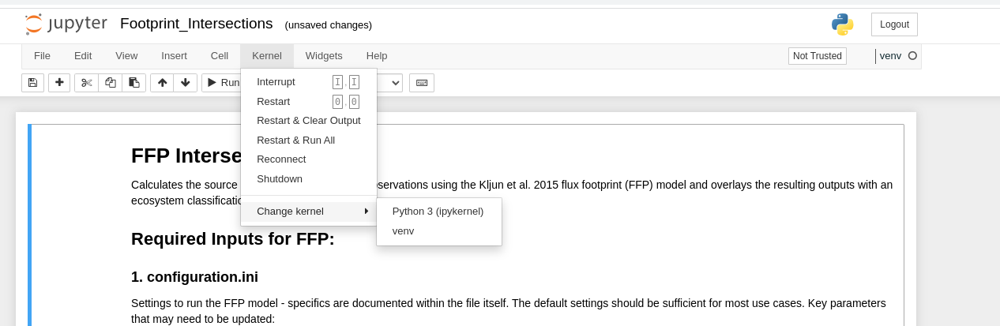

A wrapper for the Kljun et al. 2015 flux footprint (FFP) function to incorporate spatial analysis in the FFP processing pipeline while parallelizing the processing to speed up computation times.
Kljun, N., Calanca, P., Rotach, M. W., & Schmid, H. P. (2015). A simple two-dimensional parameterisation for Flux Footprint Prediction (FFP). Geoscientific Model Development, 8(11), 3695–3713.
Example Output
Given half-hourly turbulence conditions and metadata for a site, this wrapper will calculate the FFP on a per-time-step basis, and output FFP contours over desired intervals in this web-map format. If provided a landscape classification map, the program will also overlay each timestep’s footprint with the map. This allows the user to estimate the relative source contrition of different ecosystem components in some heterogeneous ecosystems. Figure 1 shows an example of the web map output for the Burns Bog 2 EC station. Figure 2 gives an example of outputs that can be produced when a basemap ecosystem classification map is provided.
Setup
For best results, you should use Python 3.10 or higher and run this code in a virtual environment
- Its is not explicitly required to use virtual environments, but it is good practice to ensure all dependencies are met and you don’t corrupt your base Python installation
- The root folder “FFP_Overlay” has a “requirements.txt” which lists the packages installed in the virtual environment
- To install the packages, you can follow the steps listed below
- It is best to do this in a dedicated virtual environment so you don’t run into any conflicts with pre-existing installations in your main python environment.
- See the instructions below to create a generic virtual environment with pip ## Create a virtual environment
Using Visual Studio (VS) Code
If you have VS Code installed, with the python extension, you can:
- Open the FFP_Overlay folder in VS Code
- Hit ctrl + shift + p > and select “Create Python Environment”
- Use Venv, not conda
- You will be prompted to select dependencies to install
- Select “requirements.txt” form the menu. This will automatically install all required packages for you.
Windows setup
This assumes you have FFP_Overlay in “C:"
cd C:_Overlay
py -m venv .venv
- Note if “py” doesn’t work - try “python” or “python3” instead - the call to python may be different depending on your installation
.venv
pip install -r ..txt
macOS/Linux setup
This assumes you have FFP_Overlay in “/home/”
cd /home/FFP_Overlay/
python3 -m venv .venv
source .venv/bin/activate
pip install -r ./requirements.txt
Running Jupyter Notebook in a .venv?
Install/activate the notebook as above depending on your OS
In your terminal enter the command
ipython kernel install –user –name=venv
Call the jupyter notebook from your terminal.
On windows:
jupyter notebook
Mac/Linux:
jupyter-notebook
- Within jupyter, select “venv” as your kernel.
